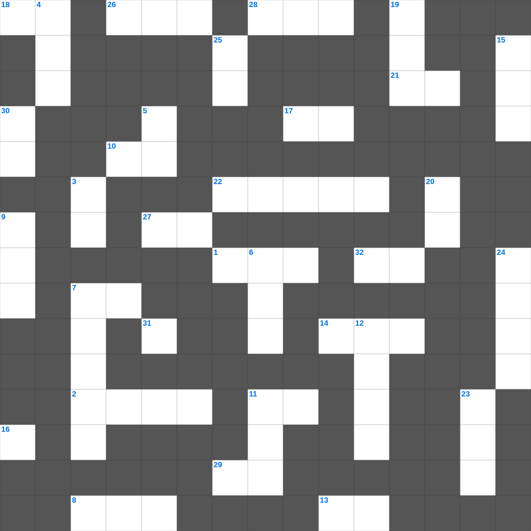

학개: 성전을 건축하라
📌 서비스 정의
십자가로세로는 교회 주보와 주일학교에서 사용할 수 있는 성경 기반 가로세로 퍼즐 서비스입니다. 성경 인물, 사건, 핵심 구절을 바탕으로 제작되었습니다. 온라인 풀이 및 인쇄 기능을 제공합니다.
📖 학개란?
학개는 바벨론 포로 귀환 후 성전 재건을 미루던 백성들에게 성전 건축을 독려하며, 하나님의 영광이 다시 임할 것을 약속한 예언서입니다.
📚 학개의 주요 사건·주제
성전 재건 독려 · 백성들의 우선순위에 대한 경고 · 성전 영광 회복 약속 · 스룹바벨에 대한 격려 · 메시아적 약속(인장 비유)
오늘은 학개의 주요 내용을 담은 학개 성경퀴즈를 준비했습니다. 총 35개의 힌트가 있으며, 주일학교 교재나 성경공부 자료로 활용하기 좋습니다. 무료로 즐기는 학개 가로세로 퍼즐을 지금 바로 풀어보세요!

📝 가로 힌트
1. 제사장이 손발을 씻는 놋 그릇
2. 인류 최초의 옷은 무슨 잎으로 만들었나?
7. 요셉이 보디발의 아내 유혹을 물리치고 간 곳
8. 평안히 눕고 이것하기도 하리니
10. 어려운 이웃을 돕는 일
11. 여섯째 날 마지막에 만드신 존재
12. 잃어버린 한 마리 이것을 찾는 목자
13. 제사장이 입는 거룩한 옷
14. 하나님께 노래로 영광 돌리는 팀
16. 베드로가 세 번 부인할 때 울었던 새
17. 여호와 이것: 승리의 하나님
18. 양 떼를 치는 감독자
21. 여호와 이것: 치료하시는 하나님
22. 구하라 그리하면 너희에게 이것을 주실 것이요
26. 모세의 누나
27. 밤이 없겠고 등불과 이것이 쓸데없으니
28. 아론과 훌이 모세의 팔을 붙든 곳
29. 하나님이 세상을 창조하신 기간(일)
31. 넷째 날 만드신 밤의 주관자
32. 곳곳에 기근과 이것이 있으리니
📝 세로 힌트
3. 사망아 너의 승리가 어디 있느냐 사망아 네가 쏘는 것이 어디 있느냐
4. 오직 의인은 믿음으로 말미암아 살리라
5. 제물을 통째로 태워 드리는 제사
6. 바울이 2년 동안 가르쳤던 서원
7. 노아가 보낸 비둘기가 물고 온 잎
9. 이스라엘이 광야에서 보낸 시간(년)
11. 노아의 방주에 비가 내린 일수
12. 양의 뿔로 만든 나팔
15. 광야 생활을 기억하며 텐트를 치는 절기
19. 이스라엘의 유일한 여성 사사
20. 내가 누구를 보내며 누가 우리를 위하여 이것할꼬
23. 죄를 속하기 위해 드리는 제사
24. 노아의 방주가 머문 산
25. 실로암 못에서 눈을 씻고 보게 된 사람
30. 솔로몬 성전의 두 기둥 이름 중 하나
🧑🏫 교회 교육 자료 활용
이 퍼즐은 주일학교 교재 추천 자료로 활용할 수 있고, 주일학교 주보에 넣기 좋은 분량으로 구성되어 있습니다. 수업용 주일학교 교안에 활동지로 붙이거나, 예배 후 복습용 주일학교 공과교재로 바로 사용할 수 있습니다.
🏷️ 키워드
학개 성경퀴즈, 학개, 십자가로세로, 성경퀴즈, 말씀퀴즈, 가로세로퍼즐, 주일학교 교재 추천, 주일학교 주보, 주일학교 교안, 주일학교 공과교재